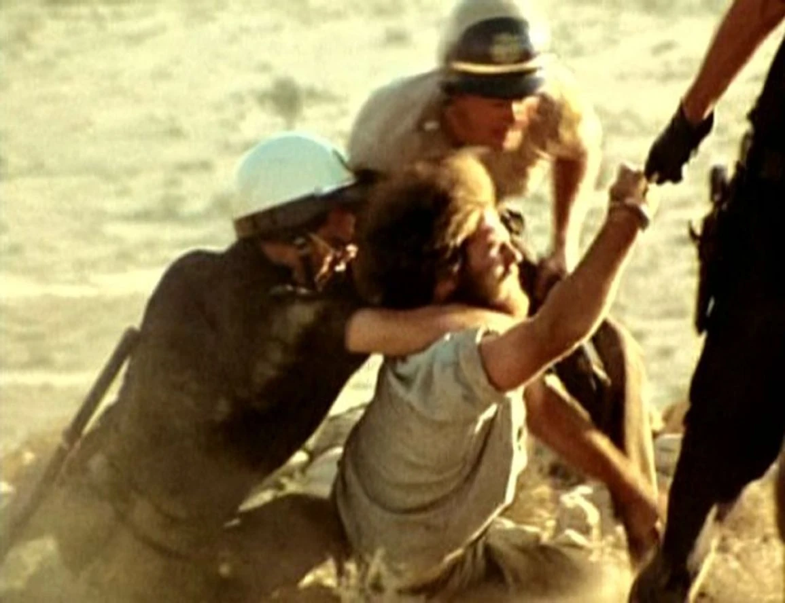
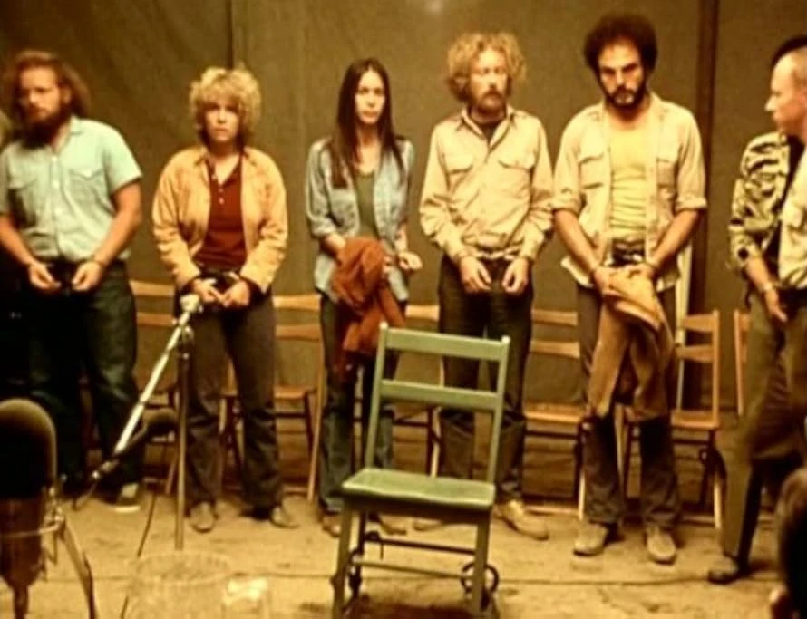

Zufallsfund in der Bibliothek
Strafpark – wow. Bis vor kurzem war der Filmtitel mir nicht einmal ein Begriff und nun hat er sich einen Platz in der Liste meiner absoluten Lieblingsfilme gebahnt. Letztens stöberte ich in der Bibliothek und dort ist mir der Film dann vor die Nase gekommen. Kino Kontrovers – Strafpark. Wer mich kennt, der weiß, dass mich kontroverse Filme regelrecht anziehen. Zuhause also direkt die Disc eingeworfen und ich war sofort im Bann.
Worum geht's?
Ich will nicht zu sehr auf den Inhalt eingehen, aber hier eine kurze Beschreibung, worum es in Strafpark überhaupt geht: In einer nahen Zukunft, die verdächtig nach 1970 aussieht, ruft der US-Präsident wegen des eskalierenden Vietnamkriegs den Notstand aus und lässt Kriegsgegner, Studenten und andere Unbequeme kurzerhand wegsperren. Wer vor dem Tribunal verurteilt wird, hat die Wahl: jahrelang ins Gefängnis oder drei Tage in den titelgebenden Strafpark. Dort müssen die Gefangenen bei brütender Hitze eine amerikanische Flagge tief in der Wüste erreichen, ohne Wasser, ohne Essen und verfolgt von schwer bewaffneter Polizei und Nationalgarde. Zwei europäische Kamerateams halten drauf, während der vermeintliche Deal immer mehr zur Farce wird.

Echt oder inszeniert?
Peter Watkins inszeniert hier – ähnlich wie schon vorher in The War Game von 1966, den ich bereits kannte – ein fiktives Szenario, welches er aber mit seinem typischen pseudo-dokumentarischen Stil so real werden lässt, dass man sich beim Gucken fragt: Gab es diese Strafparks wirklich?
Ein Film, den keiner zeigen wollte
Das dachte sich wohl auch die amerikanische Öffentlichkeit, deren Ansichten hier zur Schau gestellt und hinterfragt werden. Der Film bekam nie eine richtige Kino-Auswertung, weil auf Kinobetreiber Druck von allen Seiten ausgeübt wurde. Und Peter Watkins wurde von den Medien zerrissen und regelrecht als Teufel an die Wand gemalt.

Fazit
Ich kann den Film jedem ans Herz legen, die 88 Minuten sind bestens investierte Zeit und an den Film werdet ihr euch mit Sicherheit erinnern.
Meine Wertung: 10/10. Ein neuer Lieblingsfilm.
Ähnliche Filme
Wem Strafpark gefallen hat, dem empfehle ich: The War Game (1966), Medium Cool (1969) und Schlacht um Algier (1966).
Weitere Reviews